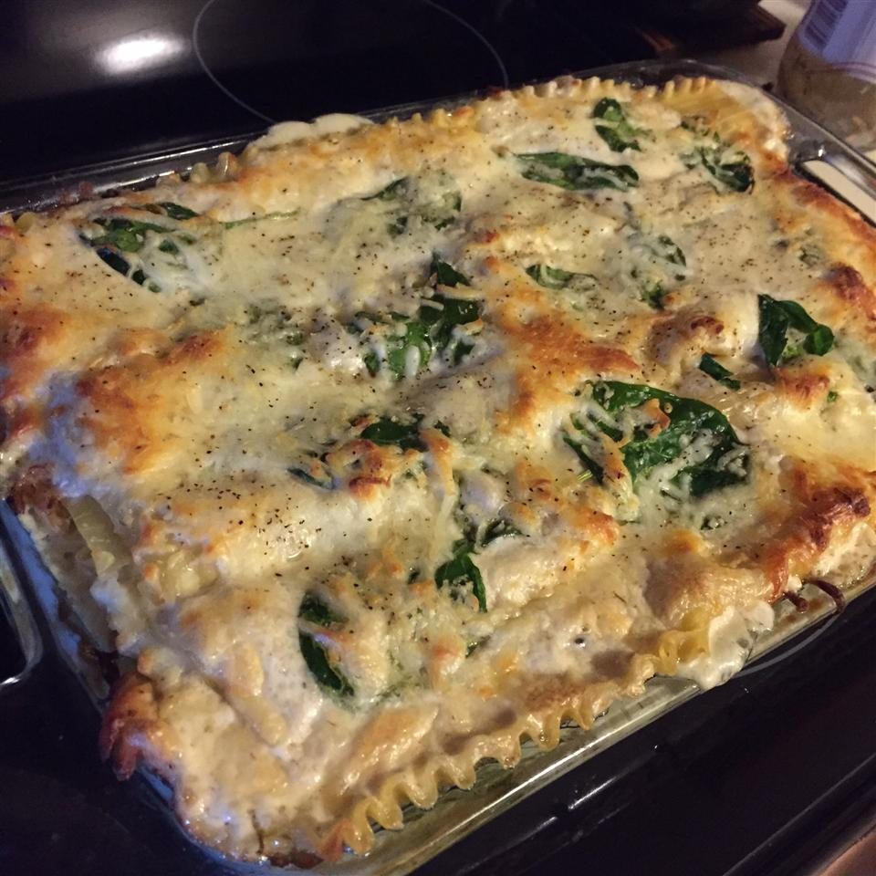

Alfred's Lasagna

Wow! So Italian!
This super tasty dish has all the important food groups. Chicken, spinach, cheese, and Alfred. The hardest part is hunting down Alfred.
Ingredients
- 1 (8 ounce) package of lasagna noodles
- 3 cups heavy cream
- 2 (10.5 ounce) cans cream of chicken (or mushroom) soup
- 1 cup grated Parmesan cheese
- 1/4 cup butter
- 1 tablespoon olive oil
- 4 cloves garlic, sliced
- 1 roasted chicken, shredded
- salt and ground pepper to taste
- 1 cup ricotta cheese
- 1 bunch fresh spinach, rinsed
- 3 cups shredded mozzarella cheese
semi-optional for me because I mostly hate them:
- 1/2 large onion, diced
- 5 mushrooms, diced
Steps
- Preheat oven to 350 degrees F (175 degrees C). Bring a large pot of lightly salted water to a boil. Cook lasagna noodles for 8 to 10 minutes, or until al dente. Drain, and rinse with cold water.
- In a saucepan over low heat, mix together heavy cream, cream of chicken (or mushroom) soup, Parmesan cheese, and butter. Simmer, stirring frequently, until well blended.
- Heat the olive oil in a skillet over medium heat. Cook and stir the onion (unless you hate it) in olive oil until tender, then add garlic and mushrooms (unless you hate them). Mix in the chicken, and cook until heated through. Season with salt and pepper.
- Lightly coat the bottom of a 9x13 inch baking dish with enough of the cream sauce mixture to coat. Layer with 1/3 of the lasagna noodles, 1/2 cup ricotta, 1/2 of the spinach, 1/2 the chicken mixture, and 1 cup mozzarella. Top with 1/3 the cream sauce mixture, and repeat the layers. Place the remaining noodles on top, and spread with remaining sauce.
- Bake 1 hour in the preheated oven, or until brown and bubbly. Top with the remaining mozzarella, and continue baking until cheese is melted and lightly browned.